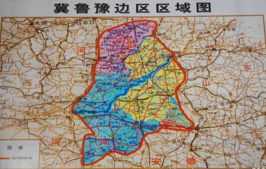
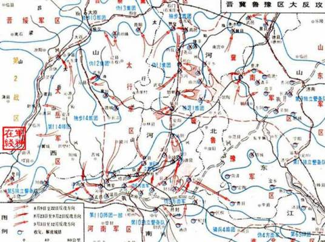

近代史

民国初，废广平府，邯郸县属直隶省冀南道，1928年，直隶省改为河北省，邯郸县直归省辖。
在抗日战争、解放战争时期，邯郸是晋冀鲁豫根据地的中心地带,刘伯承、邓小平率八路军129师转战千里太行，创建了以邯郸为中心的晋冀鲁豫解放区，从此奠定了邯郸作为晋冀鲁豫四省接壤区域中心城市的基础。中央人民广播电台的前身华北新华广播电台在邯郸开播，《人民日报》、《人民画报》在邯郸创刊，中国人民银行前身之一的冀南银行在邯郸诞生。1945年10月5日邯郸城获得解放。从此这座饱经沧桑、历尽三千年盛衰荣辱的古城终于秋风萧瑟换了人间。邯郸解放后，邯郸县城始建为邯郸市，直属晋冀鲁豫边区政府(政府设在邯郸市)。1949年3月，撤消邯郸市，降为邯郸镇，同年8月河北省人民政府成立，设立了邯郸专区，邯郸镇划归河北省邯郸专区管辖。
抗日战争时期，党领导的敌后抗日武装在河北、山东、河南三省交界的广大地区创建了一个东至津浦路，西至平汉路，北至石德路、滏阳河，南跨陇海路的敌后抗日根据地——冀鲁豫抗日根据地。
1937年底至1938年春，在日本侵略军大举进攻下，华北重镇太原、济南相继沦陷，国民党军队向南溃退，地方政权瓦解，使平汉、津浦、陇海、石德四大铁路之间的广大地区成为真空地带。河北省委和山东省委根据党中央和北方局的指示，深入这一地区发动群众，建立抗日武装，为创立冀鲁豫抗日根据地打下了良好的基础。
1938年春，直南、豫北、鲁西南地方党组织，建立了游击队，初步打开了冀鲁豫根据地的局面。同年底，八路军第一一五师部队进入鲁西南地区，推动了该地区的抗日游击战争和根据地的建设。1939年2月，八路军第一一五师第三四四旅代旅长杨得志等率部分兵力，从晋东南进到濮阳、内黄、滑县一带，和地方武装合编为冀鲁豫支队，开展游击战争，连续取得反日伪军“扫荡”的胜利。到年底，部队扩大到7000余人。1940年4月，八路军第二纵队主力在黄克诚率领下，由太行山区东进到冀鲁豫边区，同冀鲁豫支队会师合编，成立冀鲁豫军区，黄克诚兼任司令员，崔田民任政治委员。不久，黄克诚根据中央军委命令，率八路军第二纵队第三四四旅和新编第二旅由冀鲁豫南下，加强华中抗日根据地。到1940年底，冀鲁豫根据地向南发展到陇海路，西面、北面接晋冀豫根据地，东面与山东根据地相邻。1941年1月，冀鲁豫边区行政主任公署成立，晁哲甫为主任，崔田民、贾心斋为副主任。至此，包括直南、豫北、鲁西南地区的冀鲁豫抗日根据地初步形成。
1945年8月20日，中央根据情况决定正式成立晋冀鲁豫军区，刘伯承任司令员，邓小平任政治委员，滕代远、王宏坤任副司令员，薄一波任副政治委员，张际春任副政治委员兼政治部主任，李达任参谋长，王新亭任政治部副主任，周文龙任后勤部部长。下辖冀南军区、冀鲁豫军区、太行军区、太岳军区4个军区，根据地达到18万余平方千米，拥有105座县城，2400万人口，部队发展到近30万人，民兵近40万人。
1945年9月初，晋冀鲁豫军区以冀南、太行、太岳军区部队主力分别编成纵队，晋冀鲁豫军区集中主力部队在地方部队配合下举行上党战役，歼灭进攻晋东南解放区的国民党军第二战区部队3.5万余人，巩固了晋冀鲁豫解放区。10月7日，又将冀鲁豫军区部队和冀南、太行、太岳纵队依次编成军区野战军第1、第2、第3、第4纵队。
10月24日～11月2日举行邯郸战役，歼灭国民党军3万余人。其中国民党军第十一战区副司令长官兼新8军军长高树勋率近万人起义。起义部队改编为民主建国军，高树勋任总司令，归晋冀鲁豫军区建制。
6月，国民党撕毁停战协定，发动全面内战。晋冀鲁豫军区组织野战军指挥部，刘伯承、邓小平等兼任野战军领导人，执行机动作战任务；军区工作由滕代远、王宏坤、薄一波负责。此后，晋冀鲁豫野战军和军区部队接连举行闻夏、同蒲、陇海路、定陶、临浮、巨野、鄄城、吕梁、滑县、巨金鱼等战役；同时广泛开展游击战争，扩充武装，保卫解放区。到1947年2月，包括由冀鲁豫军区水东军分区等为基础组建豫皖苏军区（张国华任司令员，吴芝圃任政治委员）在内，晋冀鲁豫军区部队共有10个独立旅，45个基干团，117个县大队。民兵发展到80余万人。
1947年3月下旬至5月，为支援陕北、华东人民解放军挫败国民党军的重点进攻，晋冀鲁豫野战军发起豫北攻势和晋南攻势。太行、冀南军区主力和冀鲁豫军区部队一部参加了豫北攻势，太岳军区主力参加了晋南攻势。在此期间，徐向前任晋冀鲁豫军区第一副司令员，王世英任副参谋长，宋任穷任政治部副主任。6月底，晋冀鲁豫野战军主力南渡黄河，举行鲁西南战役后转入外线作战。
1947年8月晋冀鲁豫野战军主力越过陇海路挺进大别山，开始经略中原。8月上旬晋冀鲁豫军区将太行、冀南、冀鲁豫军区主力及转战到晋冀鲁豫解放区的中原军区突围部队主力编成第8、第9、第10、第11、第12纵队，连同西北民主联军第38军，统归晋冀鲁豫野战军建制。同时，以第4、第9纵队和第38军、第8纵队第22旅组成陈（赓）谢（富治）集团进军豫西。12月，军区部队参加运城战役。 1948年2～3月，晋冀鲁豫军区以太行军区部队组成第13纵队，以冀南军区部队组成第14纵队。随后举行临汾战役，歼灭国民党军2.5万余人。与此同时，军区各部队利用战斗间隙进行新式整军和练兵，提高了军政素质。
1948年5月，根据中央决定，晋冀鲁豫军区与晋察冀军区合并为华北军区。晋冀鲁豫军区所辖冀鲁豫、太行、太岳、冀南军区和第8、第13、第14纵队列入华北军区建制，豫皖苏军区调归中原军区建制，晋冀鲁豫军区军事政治大学与晋察冀军区军事政治干部学校合并组成华北军区军事政治大学。